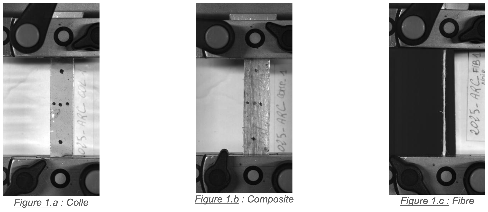
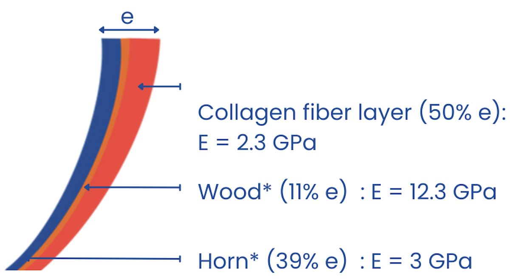
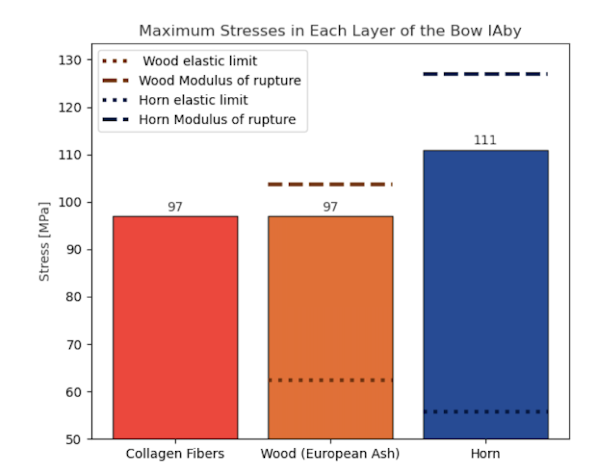

Le Contexte Historique & Problématique
Au IIIe siècle av. J.-C., le grec Biton a rédigé le Traité des machines de guerre dans lequel il décrit des arbalètes géantes d'une conception complexe. Ces armes, qu'il s'agisse de gastraphètes (armés à l'aide du poids du corps) ou de lithobolos (armés via un treuil), reposaient sur l'utilisation d'un arc composite formé de bois, de corne et de tendons d'animaux.
Ce projet semestriel, mené en collaboration avec des historiens au Laboratoire de Biomécanique et Mécanique des Chocs (LBMC), visait à répondre à une question d'ingénierie inversée : S'agit-il d'une ingénierie fonctionnelle et réaliste, ou bien d'ingénierie de papier destinée à la propagande militaire ?

Campagne d'Essais & Caractérisation
Pour modéliser l'arc, il nous fallait connaître le comportement mécanique exact du "backing" (le dos de l'arc), décrit dans les textes antiques comme un mélange de fibres de collagène (tendons) et de colle animale. Nous avons donc recréé ces matériaux en laboratoire.
Protocole et Résultats Expérimentaux
Nous avons fabriqué et testé sur une machine de traction (Instron) des éprouvettes sous trois formes : fibres de collagène pures, colle d'os seule, et le composite fini. Les essais ont révélé les comportements suivants :
- Colle d'os : Matériau fragile et rigide, avec un module d'Young moyen $E_{colle} = 1.74$ GPa.
- Fibres de collagène : Matériau résistant et très rigide, avec $E_{fibres} \approx 41.4$ GPa.
- Composite (Tendons + Colle) : L'ajout de colle réduit l'élasticité naturelle du tendon mais assure la cohésion structurelle. Nous avons déterminé un module de $E_{comp} = 2.36$ GPa.
Modélisation des 4 Arcs sous VirtualBow
Forts de ces données expérimentales couplées aux données de la littérature (Bois de frêne à $12.3$ GPa et Corne à $3$ GPa), nous avons modélisé les arcs sous le logiciel VirtualBow.
L'étude s'est portée sur l'analyse comparative des 4 modèles d'arcs décrits par Biton : les gastraphètes de Zopyros à Milet (ZMil) et à Cumes (ZCum), ainsi que les lithobolos de Charon de Magnésie (CMag) et d'Isidore d'Abydos (IAby).
Le profil multicouche a été scrupuleusement respecté selon la disposition optimale des matériaux : dos en collagène (50% de l'épaisseur), âme en bois (11%) et ventre en corne (39%).

Analyse des Contraintes
Les simulations ont révélé des contraintes catastrophiques lors de la phase d'armement :
- Pour 3 des 4 arcs (ZMil, ZCum, IAby) : Les contraintes maximales générées dans les branches dépassent très largement le module de rupture du bois et de la corne. Dans la réalité, ces trois armes se briseraient instantanément au moment de les armer.
- Pour le 4ème arc (le modèle CMag extrapolé par Marsden) : Soumis à une force de 6000 N, les contraintes n'atteignent pas la rupture immédiate de l'arme entière, mais elles dépassent la limite élastique des matériaux (ex: 111 MPa atteints dans le bois).

Conclusions du Projet
L'analyse numérique rigoureuse de ces 4 machines antiques a permis de tirer une conclusion définitive :
- Défaillance structurelle inévitable : Trois des modèles étudiés casseraient net avant même d'être pleinement armés.
- Déformations irréversibles : Le seul modèle capable d'encaisser la tension (le CMag Marsden) subit des déformations plastiques. Il s'endommagerait de façon permanente et deviendrait inutilisable dès le premier tir.
- Validation Historique : Les résultats corroborent la thèse de certains historiens : les textes de Biton décrivaient des armes conceptuelles non-fonctionnelles. Il s'agissait très probablement d'ingénierie de papier utilisée à des fins de propagande militaire.